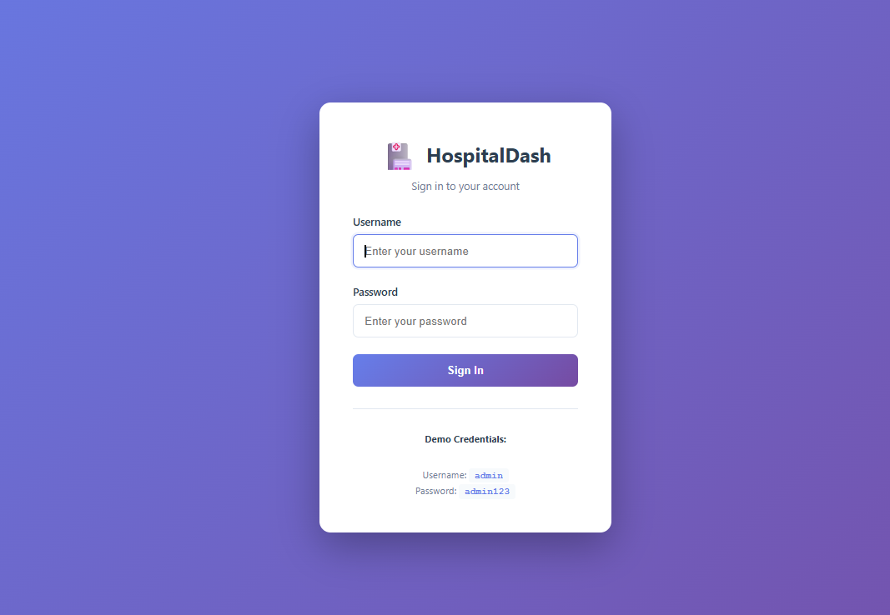
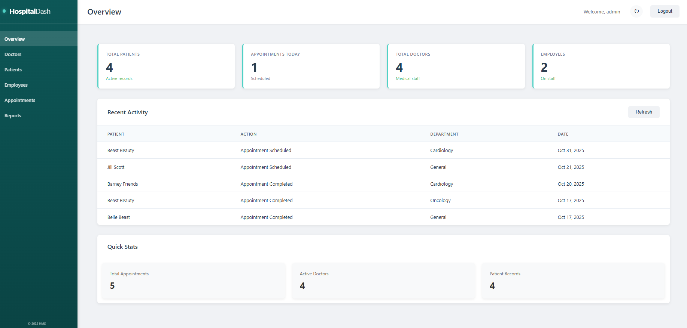
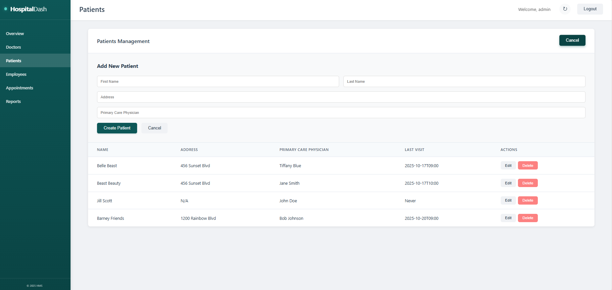
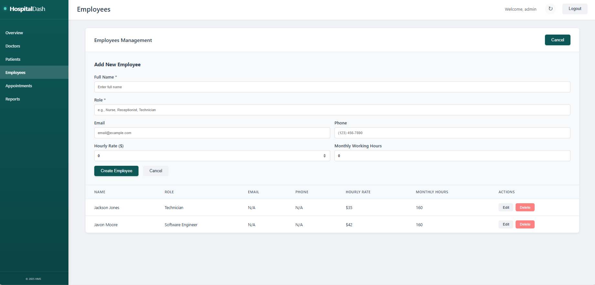
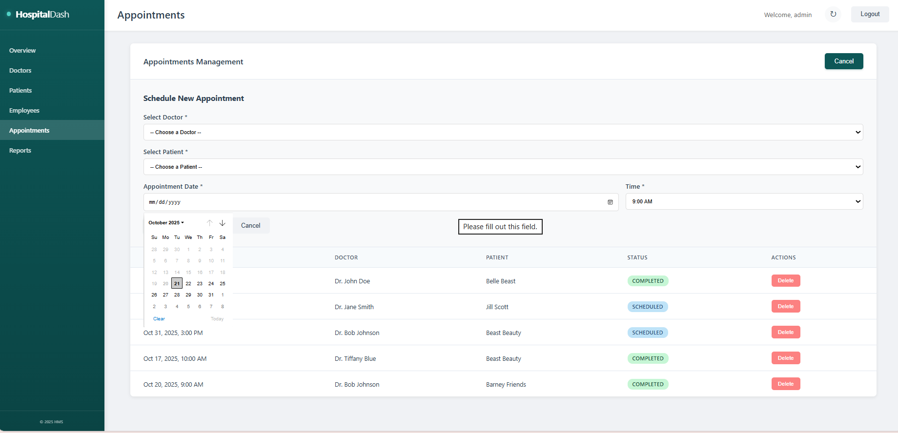
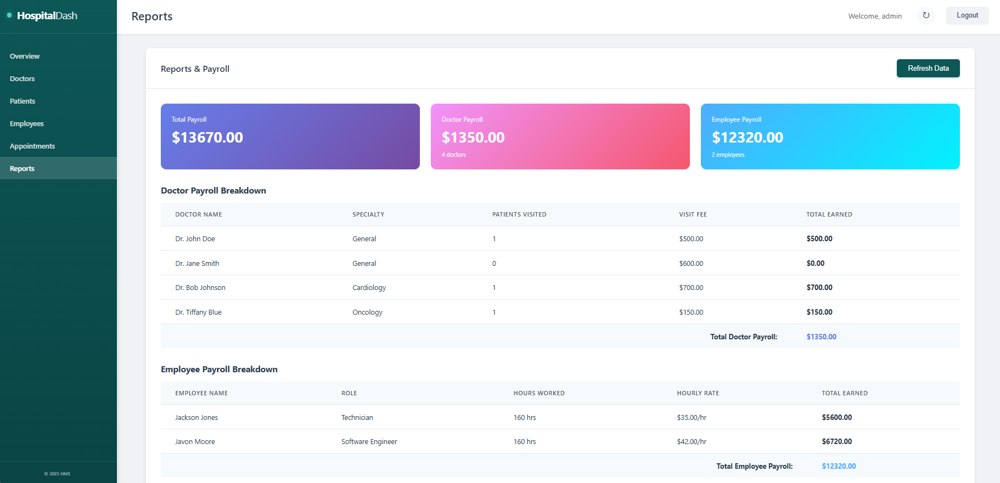
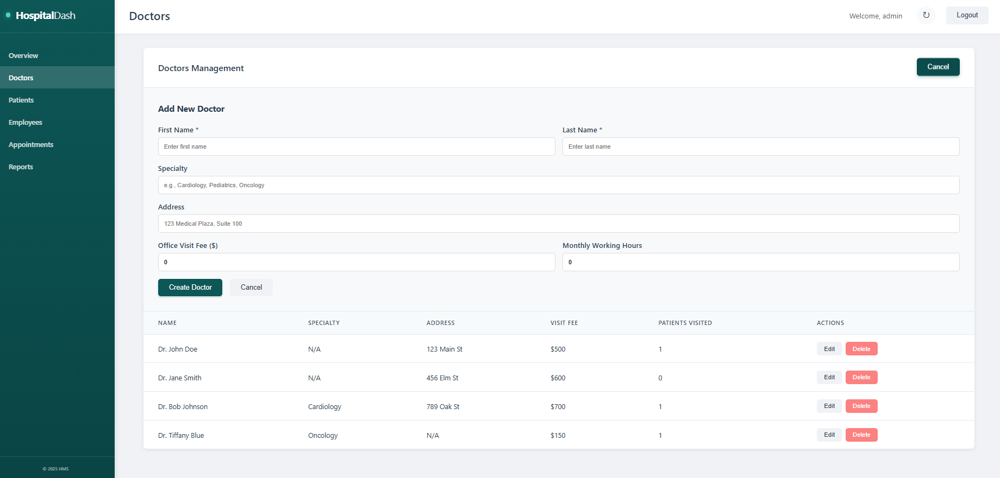

HospitalDash - System Overview
To help you understand the scope and functionality of the HospitalDash system, below are key screenshots showcasing the platform's features and architecture.
Login Page
Secure Login for Administrators and Staff
The authentication interface features a clean, user-friendly design with secure credential validation. Demo credentials are provided for testing purposes, ensuring easy access for reviewers while maintaining production-ready security protocols.
Dashboard Overview
Comprehensive Admin Dashboard for Real-Time Data Management
The main administrative panel displays critical metrics at a glance, including total patients, scheduled appointments, active doctors, and employee counts. The "Recent Activity" section provides real-time updates on patient appointments, while "Quick Stats" offer detailed insights into appointments, active doctors, and patient records.
Patient Management Page
Dynamic Patient Management with MongoDB Integration
This interface demonstrates full CRUD (Create, Read, Update, Delete) operations for patient records. Users can add new patients with comprehensive details including name, address, and primary care physician. The data table provides an organized view of all patient information with quick-access edit and delete functions.
Employee Management
Streamlined Employee Management System
The employee management module allows administrators to track staff details including roles, contact information, hourly rates, and monthly working hours. This integrated approach ensures efficient workforce management and payroll calculation.
Appointment Scheduling
Streamlined Appointment Scheduling Interface
The appointment scheduling system features an intuitive calendar interface for selecting dates and times. Administrators can assign doctors to patients, track appointment statuses (Scheduled, Completed), and manage the entire scheduling workflow from a single, organized interface.
Reports & Payroll
Financial Analytics and Payroll Processing
The reports module provides comprehensive financial insights, including total payroll calculations, doctor-specific earnings based on patient visits, and employee compensation tracking. Detailed breakdowns show specialty-wise performance and hour-based employee earnings.
Doctors Management
Medical Staff Administration Portal
This section enables complete management of medical staff, including specialty assignment, address tracking, office visit fee configuration, and patient visit monitoring. The system maintains detailed records of each doctor's performance metrics.
Key Features Demonstrated
- Full-Stack Development - Complete integration from UI to database
- RESTful API Design - Custom endpoints for all CRUD operations
- Responsive Design - Mobile-friendly, modern UI/UX
- Real-Time Data - Live updates and dynamic content rendering
- Secure Authentication - Role-based access control
- Cloud Deployment - Production-ready AWS infrastructure
- Database Management - Efficient NoSQL data modeling with MongoDB
API Testing Preview
Custom REST APIs Built in Spring Boot for Data Flow Control
Example API endpoints tested via Postman:
GET /api/patients - Retrieve all patients
POST /api/patients - Create new patient
PUT /api/patients/{id} - Update patient information
DELETE /api/patients/{id} - Delete patient record
GET /api/appointments - Retrieve all appointments
POST /api/appointments - Schedule new appointment
GET /api/doctors - Retrieve all doctors
POST /api/doctors - Add new doctor
GET /api/reports/payroll - Generate payroll reportsAll endpoints return standardized JSON responses with proper HTTP status codes and error handling.